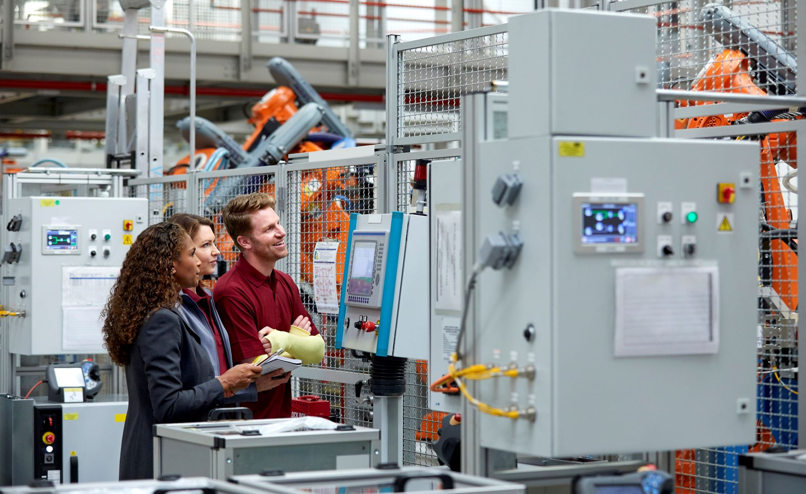

Technology Trends
Technological innovation has yielded truly remarkable advances in health care during the last five decades. In recent years, breakthroughs in a variety of areas have helped to improve health care delivery and patient outcomes, including antivirals, anticlotting drugs, antidiabetic drugs, antihypertensive drugs, antirheumatic drugs, vaccines, pharmacogenomics and targeted cancer therapies, cardiac rhythm management, diagnostic imaging, minimally invasive surgery, joint replacement, pain management, infection control, and health information technology.
The proliferation of health care technology and its expanding uses have contributed to burgeoning health care costs, and the former has been cited as “culprit” for the latter. However, this relationship is variable, complex, and evolving (Cutler 2001; Cutler 2011; Goyen 2009; Medicare Payment Advisory Commission 2001; Newhouse 1992; Smith 2000). In the US, the Congressional Budget Office concluded that “roughly half of the increase in health care spending during the past several decades was associated with the expanded capabilities of medicine brought about by technological advances” (US Congressional Budget Office 2008).
Few patients or clinicians are willing to forego access to state-of-the-art health care technology. In the wealthier countries and those with growing economies, adoption and use of technology has been stimulated by patient and physician incentives to seek any potential health benefit with limited regard to cost, and by third-party payment, provider competition, effective marketing of technologies, and consumer awareness. Box I-1 shows some of the factors that influence demand for health technology.

Origins of Technology Assessment
Technology assessment (TA) arose in the mid-1960s from an appreciation of the critical role of technology in modern society and its potential for unintended, and sometimes harmful, consequences. Experience with the side effects of a multitude of chemical, industrial and agricultural processes and such services as transportation, health, and resource management contributed to this understanding. Early assessments concerned such topics as offshore oil drilling, pesticides, automobile pollution, nuclear power plants, supersonic airplanes, weather modification, and the artificial heart. TA was conceived as a way to identify the desirable first-order, intended effects of technologies as well as the higher-order, unintended social, economic and environmental effects (Banta 2009; Brooks and Bowers 1970; Kunkle 1995; Margolis 2003).
Some Definitions of Technology Assessment
[Technology assessment is] the systematic study of the effects on society, that may occur when a technology is introduced, extended, or modified, with emphasis on the impacts that are unintended, indirect, or delayed (Coates 1976).
Technology assessment (TA) is a category of policy studies, intended to provide decision makers with information about the possible impacts and consequences of a new technology or a significant change in an old technology. It is concerned with both direct and indirect or secondary consequences, both benefits and disbenefits, and with mapping the uncertainties involved in any government or private use or transfer of a technology. TA provides decision makers with an ordered set of analyzed policy options, and an understanding of their implications for the economy, the environment, and the social, political, and legal processes and institutions of society (Coates 1992).

Technology assessment ultimately comprises a systems approach to the management of technology reaching beyond technology and industrial aspects into society and environmental domains. Initially, it deals with assessment of effects, consequences, and risks of a technology, but also is a forecasting function looking into the projection of opportunities and skill development as an input into strategic planning. In this respect, it also has a component both for monitoring and scrutinizing information gathering. Ultimately, TA is a policy and consensus building process as well (UN Branch for Science and Technology for Development 1991).
Technology assessment is a form of policy research that examines short- and long-term social consequences (for example, societal, economic, ethical, legal) of the application of technology. The goal of technology assessment is to provide policy-makers with information on policy alternatives (Banta 1993).

Early Health Technology Assessment
Health technologies had been studied for safety, effectiveness, cost, and other concerns long before the advent of HTA. Development of TA as a systematic inquiry in the 1960s and 1970s coincided with the introduction of some health technologies that prompted widespread public interest in matters that transcended their immediate health effects. Health care technologies were among the topics of early TAs. Multiphasic health screening was one of three topics of “experimental” TAs conducted by the NAE at the request of Congress (National Academy of Engineering 1969). In response to a request by the National Science Foundation to further develop the TA concept in the area of biomedical technologies, the National Research Council conducted TAs on in vitro fertilization, predetermination of the sex of children, retardation of aging, and modifying human behavior by neurosurgical, electrical or pharmaceutical means (National Research Council 1975). The OTA issued a report on drug bioequivalence in 1974 (Drug Bioequivalence 1974), and the OTA Health Program issued its first formal report in 1976.
Medical Technology
Medical biotechnology is the use of living cells and other cell materials to better the health of humans. Primarily, it is used for finding cures as well as getting rid of and preventing diseases.
The science involved includes the use of these tools for research to find different or more efficient ways of maintaining human health, understanding pathogens, and understanding human cell biology.
Here, the technique is used to produce pharmaceutical drugs as well as other chemicals to combat diseases. It involves the study of bacteria, plant & animal cells, to first understand the way they function at a fundamental level.
It heavily involves the study of DNA (Deoxyribonucleic acid) to get to know how to manipulate the genetic makeup of cells to increase the production of beneficial characteristics that humans might find useful, such as the production of insulin.
The field usually leads to the development of new drugs and treatments, novel to the field.

Agricultural Biotechnology
Agricultural biotechnology focuses on developing genetically modified plants to increase crop yields or introduce characteristics to those plants that provide them with an advantage growing in regions that place some kind of stress factor on the plant, namely weather, and pests.

Industrial Biotechnology
Industrial biotechnology is the application of biotechnology for industrial purposes that also include industrial fermentation. Applying the techniques of modern molecular biology, it improves efficiency and reduces the multifaceted environmental impacts of industrial processes including paper and pulp, chemical manufacturing, and textile.
It includes the practice of using cells such as microorganisms, or components of cells like enzymes, to generate products in sectors that are industrially useful, such as food and feed, chemicals, detergents, paper and pulp, textiles, biofuels, and biogas.